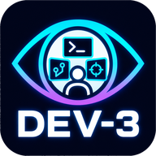

Your browser should hand off to the dev-3.0 app. If nothing happens, use the button below.
Or paste this into Spotlight or your browser's address bar:
Don't have it yet? Get dev-3.0
This link is missing a task or project to open.
Go to dev-3.0